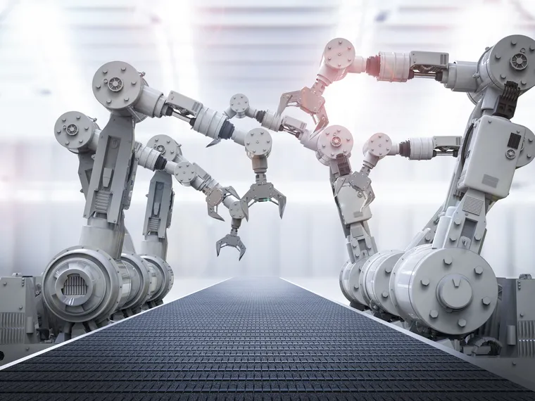

La hiperautomatización es la aplicación de tecnologías avanzadas como IA y aprendizaje automático (Machine Learning) para automatizar procesos de manera mucho impactante que las capacidades de automatización tradicionales. Esto quiere decir que la aplicación de esta tecnología podría hacer desaparecer muchos trabajos hasta ahora realizados por humanos, que podrán realizarse de manera automática con robots mejorados. Esta tecnología es de aplicación inevitable en la próxima década, según el centro tecnológico Gradiant, lo que obligará a muchas personas a replantear la manera en que obtienen ingresos. La inteligencia artificial ya es capaz de realizar, no solo trabajos mecánicos, sino procesos complejos como la elaboración de textos, e incluso la creación de obras de arte.
